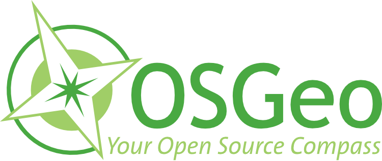
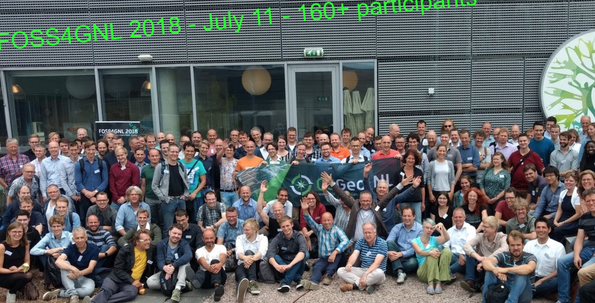
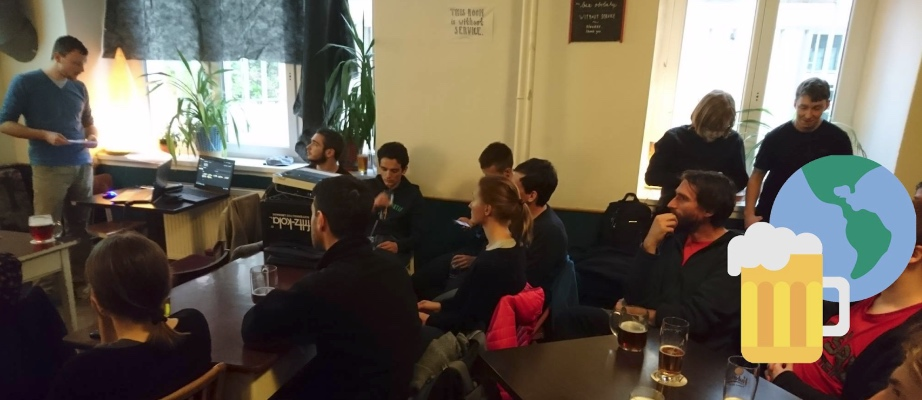
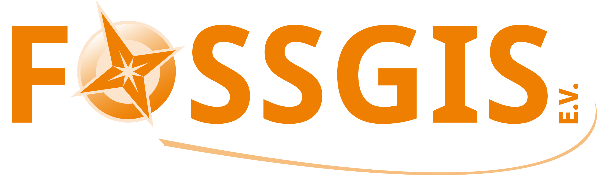
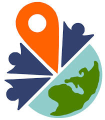
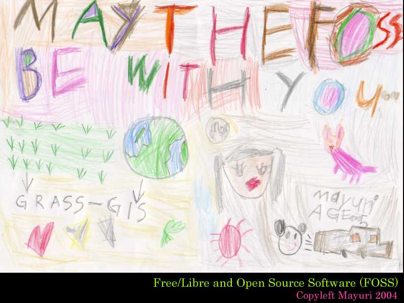

OSGeo + OSM
Get to know OSGeo and how OSM is connected
Enock Seth Nyamador (OSGeo Marketing from Accra, Ghana)

Open Source Geospatial Foundation
Free, Open, Self-organizing, Global
OSGeo history
- Established in 2006 at a meeting in Chicago, IL with financial support from AutoDesk
- Note: OSM was there already since 2004
- Driven by need to organize and navigate rapidly growing field of open source geospatial projects
- Founding members: leading open source geospatial projects - GDAL, MapServer, QGIS, GRASS GIS, PostGIS


OSGeo Projects love OSM Data
GDAL OSM Support
OpenLayers / Leaflet OSM Support
OSM based Services as Basemap f.e Mapbender
pgRouting on OSM data
OSM User love OSGeo Projects
QGIS visualisation & import & lot of possibilities & plugins
a variety of Software for different needs
OSGeo membership
Open, free membership- 5600+ members registered on the wiki
- 940 registrations on the website 08/2019
- 33700+ OSGeo mailman server unique subscribers 08/2019
- 425 elected charter members - developers, activists, advocates (2018)
- charter members elect the board of directors
- Note: 5.3 million OSM registrations (2019-06-07 OSM Stats)
Local chapters
- 30 + local chapters all over the world
- organize meetups, conferences, code sprints
- report at Annual General Meeting at Global FOSS4G
- manage translations of documentation
 
Local chapters
are they connected to OSM?

Local chapter FOSSGIS e.V.
German language local Chapter for OSGeo
Official Local Chapter of OSMF for Germany
- 200+ members
- FOSSGIS & OSM good combination
- maybe different interests

FOSS4G covers OSGeo and OSM
focus on FOSS4G - Free open Source Software for Geospatial
meet the developer
talks about new feature in software xy
talks about use cases
... often solutions with OSM
... regional events are often combinations of OSGeo and OSM
Beyond software
OSGeo works with partners to support and promote
- Open Source: collaborative software development.
- Open Data: free access to geospatial data
- Open Standards: avoid lock-in, use interoperable software
- Open Education: learning and teaching without barriers
- Open Science: Share data, software, publications
- MoUs with 14+ organizations
How it started
Founded in 2011: MoU between OSGeo and the International Cartographic Association (ICA)

Georg Gartner and Arnulf Christl, renewal in 2015 with Jeff McKenna
More MoUs
International Society for Photogrammetry and Remote Sensing (ISPRS) signed in 2014.
University Consortium for GIScience (UCGIS) signed in 2016
Association of Geographic Information Laboratories in Europe (AGILE) signed in 2017
 Open Geospatial Consortium
Open Geospatial Consortium


 YouthMappers (signed in 2018)
US DoI, OGC, LH Corp, IGU, STP India, TIB, GLTN, UNIGIS
So why not an OSGeo OSM MoU?
people from OSGeo and OSMF talked

- OSM met with OSGeo at the LinuxTag 2006 and the following years
- No MoU singed as OSM does not do that
- we are friends already
- no need for a MoU
- new Category: Like Minded Organizations
OSM Data from the region of the actual FOSS4G
iD Editor, JOSM, Mapnik


Great Combination

Enjoy a wonderful SotM 2019 in Heidelberg!
Astrid Emde (OSGeo)
FOSS4G 2011 Denver Everyone's a mapper in their own way" performed by Captain Geo, aka Schuyler Erle